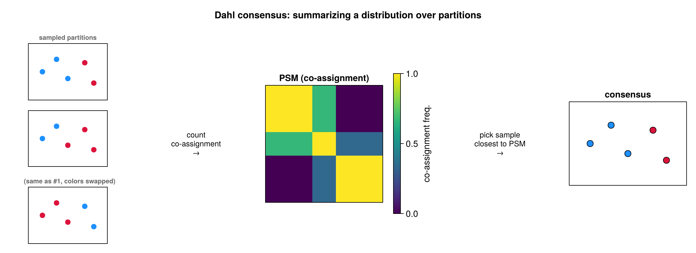
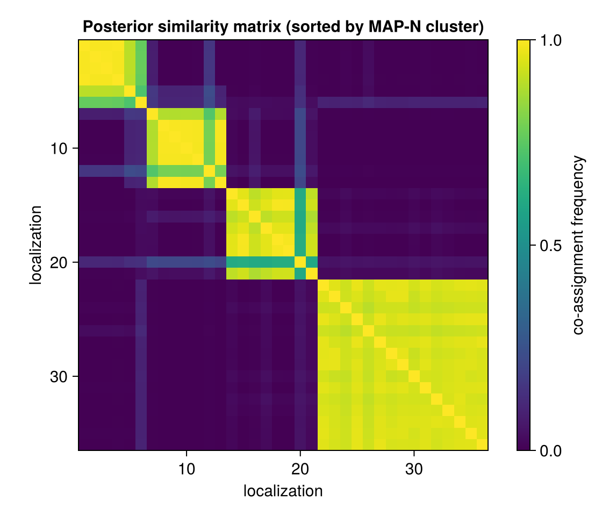
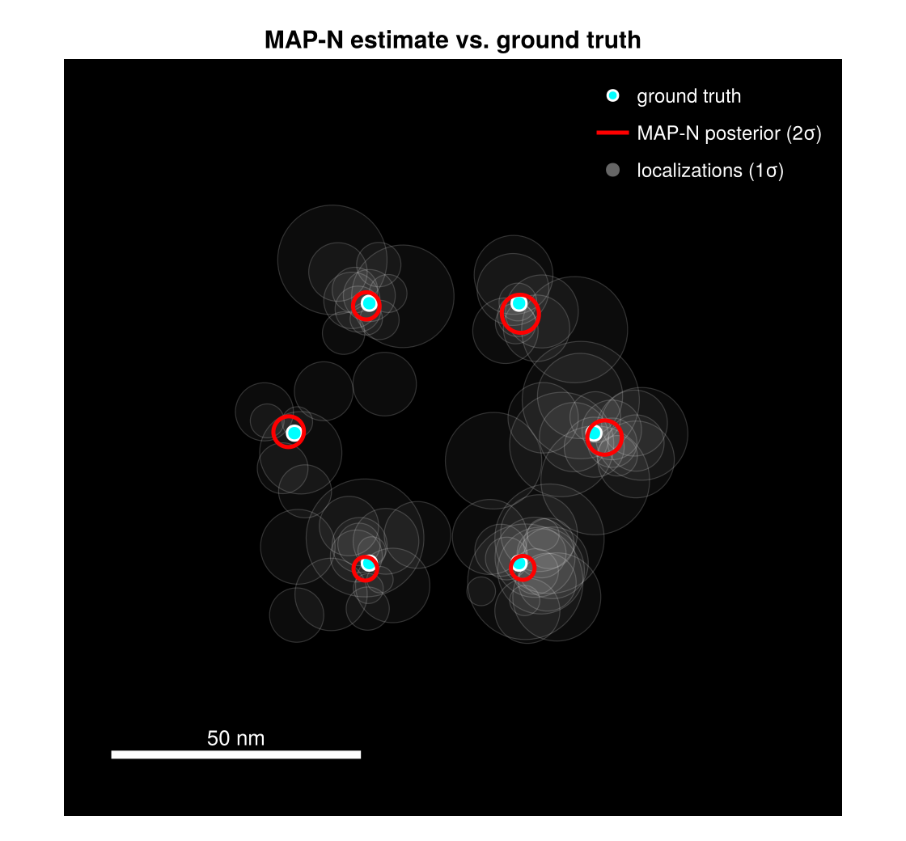

MAP-N Estimation
The chain yields a full posterior over $(K, \mathbf{z})$. For a point summary, the production path (run_bagol) uses, per partition, Dahl consensus to fix the count and a reference grouping, then overlap-Hungarian pooling for positions and uncertainty (mapn.jl).
The chain does not return one grouping — it returns a distribution over groupings, and we need a single representative one. You cannot simply average partitions: cluster labels are arbitrary, so "cluster 1" in one sample need not be "cluster 1" in another (label switching), and the average of two partitions is not even a partition. The fix is a label-free summary — the posterior similarity matrix (PSM), the fraction of samples in which each pair of localizations lands in the same emitter; pairwise co-assignment does not care what the clusters are called. Dahl's method then returns the single sampled partition that best matches this average co-assignment, so the answer is always a real, achievable grouping rather than an artificial average. This consensus-from-co-assignment idea is general to clustering, not specific to BaGoL.

Many sampled partitions are reduced to their pairwise co-assignment matrix (the PSM) — note the first and last samples are the same grouping with swapped colors (label switching), which the label-free PSM ignores. Dahl returns the sampled partition closest to the PSM: the consensus grouping.
Dahl consensus
estimate_dahl chooses the visited sample whose pairwise co-assignment matrix is closest to the posterior similarity matrix (PSM) in squared Frobenius distance over the strict upper triangle:
\[D(\mathbf{z}) = \sum_{i<j}\big(\mathbf{1}[z_i = z_j] - C_{ij}\big)^2 , \qquad C_{ij} = \frac{1}{T}\sum_{t=1}^{T} \mathbf{1}\big[z_i^{(t)} = z_j^{(t)}\big],\]
where $C_{ij}$ (from PSMAccumulator) is the empirical co-assignment frequency over the $T$ post-burn-in samples. This minimizes the posterior expected Binder loss restricted to the visited partitions, and fixes $K$ as the cluster count of the winning sample.

The posterior similarity matrix, localizations ordered by Dahl cluster. Bright diagonal blocks are confident groupings; smeared off-diagonal mass is label ambiguity the reported uncertainty must capture.
Overlap-Hungarian pooling
estimate_mapn_overlap restricts to samples with exactly $K$ clusters, matches each to the Dahl reference by maximum localization overlap (Hungarian on the overlap-count cost), and pools. The emitter position is the mean of the matched posterior means, and the reported covariance is a practical approximation to the law of total variance:
\[\Sigma_{\text{emitter}} \;\approx\; \underbrace{\Sigma^{\text{post}}_{\text{Dahl}}}_{\text{within-cluster (Dahl)}} \;+\; \underbrace{\mathrm{Cov}\big[\overline{\theta}^{(t)}\big]}_{\text{between-sample spread}} .\]
The first term is the Dahl cluster's analytic posterior covariance (used in place of the sample-averaged within-cluster variance); the second adds the between-sample spread of the matched means (when at least three samples match), so allocation ambiguity inflates the reported uncertainty rather than being hidden.

MAP-N posterior ellipses (red, 2σ) over the localizations (faint gray, 1σ) and ground truth (cyan). The ellipses sit on the true emitters and are far tighter than the localization cloud.
Alternative estimators
Exported for direct use on stored samples (not on the default pipeline path):
estimate_mapn_collapsed— histogram-mode $K$ + Hungarian on positions, median pooling;estimate_mapn_psm— $K$ from PSM connected components;estimate_vi_greedy— greedy minimization of summed Variation of Information.
All require a PSMAccumulator (and PartitionSamples) in the chain's accumulator list.
Everything so far runs on one cluster of localizations; Large-Dataset Partitioning scales it to a full field of view.